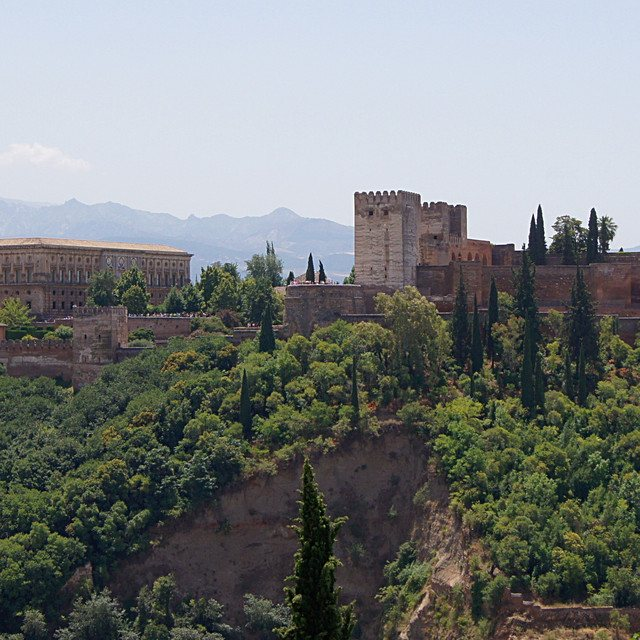

The Eclectic Polymath Podcast · Archive
#247 Spain: The Cultural Superpower History Tried to Erase

About this episode
A movie about a murdered poet just won at Cannes — and it opens the door on the biggest buried story in Western culture. Spain has been one of the world's great cultural capitals not once but three times: the Golden Age that invented the novel and gave us Velázquez, the 1920s Madrid of Lorca, Dalí, and Buñuel, and the explosion that followed Franco. Each time, politics walked in and cut it short.
Key points
- Spain has been one of the world's great cultural capitals not once but three times: the Golden Age that invented the novel and gave us Velázquez, the 1920s Madrid of Lorca, Dalí, and Buñuel, and the explosion that followed Franco.
- Cervantes and the Siglo de Oro, the Residencia de Estudiantes where Lorca, Dalí, and Buñuel shared a dormitory, the Spanish Civil War as a culture war
- Lorca shot without trial, Guernica bombed, Picasso's painting exiled for 44 years
- and the queer history Spain tried to imprison, from Franco's "dangerousness" law to La Movida Madrileña, Almodóvar, and La Bola Negra, the film built from the four surviving pages of Lorca's unfinished manuscript.
- Along the way: the pattern of how cultural capitals form, why they move, and why Spain keeps coming back.
More like this
 #246 Los Angeles: The Capital of the Pacific CenturyOctober 29, 20261:06:28
#246 Los Angeles: The Capital of the Pacific CenturyOctober 29, 20261:06:28 #248 Los Angeles Votes: Bass, Raman, and the Ballot That Rewrites Two GovernmentsOctober 31, 20261:04:54
#248 Los Angeles Votes: Bass, Raman, and the Ballot That Rewrites Two GovernmentsOctober 31, 20261:04:54 #034: John Mbiti and the Debate Over African TimeMay 31, 202646:32
#034: John Mbiti and the Debate Over African TimeMay 31, 202646:32 #040: Peptides, GLP 1s, and the New Age of Body HackingJune 3, 20261:10:53
#040: Peptides, GLP 1s, and the New Age of Body HackingJune 3, 20261:10:53